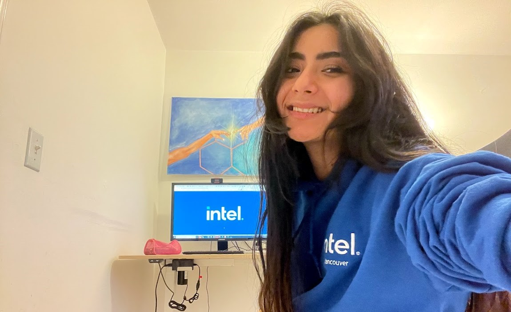

Co-op 1: Intel of Canada Ltd.
I was lucky enough to spend 8 entire months, from September 2020 to April 2021 working here. I was on the ECC team which meant lots of Matrix Algebra! Lots of Verilog! Lots of C! (and Lots of Fun! :) ).
ECC stands for Error Correction Code, which means that our team creates and implements algorithms that try to find, and correct, bit errors. Whenever we try to access data by reading or writing to it, or even if data is just staying stored, bits can flip. Which is a big problem (image all your favourite pictures corrupted and never to be seen again!). So our team combatted this problem by encoding and decoding the data in special ways so the probabilty of the wrong bits flipping became incredibly unlikely.
Into the non technical side...
My work term here was through the Pandemic, which meant my role was completely work-from-home. But the community Intel offered allowed me to make incredibly strong connections and relationships with not only other co-op students and coworkers, but also managers and supervisors from other departments. They highly encouraged reaching out to as many people as possible just to learn anything more they had to offer. I even re-met one of my best friends from elementary school there, and we immediately clicked once again. It didn't feel like I was stuck at home at all, sort of like my room was a part of Intel itself, and when I stepped in, I was transported to a different world.
After about a month of just learning the ropes of my role, I decided to join an extra co-op lead initiative That helps find out what makes internships more engaging, and how the company can help students become even more inspired and motivated for their job. We sent out surveys to all the other co-ops, and analysed the data to see how what they valued in their role and how to improve their experience, and then presented those findings to the managers to implement.
Then, the term after I decided to take it one step forward. As a woman in STEM I was inspired by how many other really cool technical women were also working at the company, and as female students aspiring to go into the technical feild I thought it would benefit all my other coops greatly to be able to get advice from those women who "made it" here. So I collected all the female identifying co-ops and full-times and organized presentations, Q&A sessions, and online networking events connecting them together. (If only these event were in-person we could have also got some free snacks!)
Those 8 months passed by in a flash. This experience not only improved my technical skills in coding, and math but also greatly improved my confidence in reaching out to people, networking, giving presentations and overall being part of a corperate environment. From knowing very little of the actual working world, after this experience I now felt ready for it!